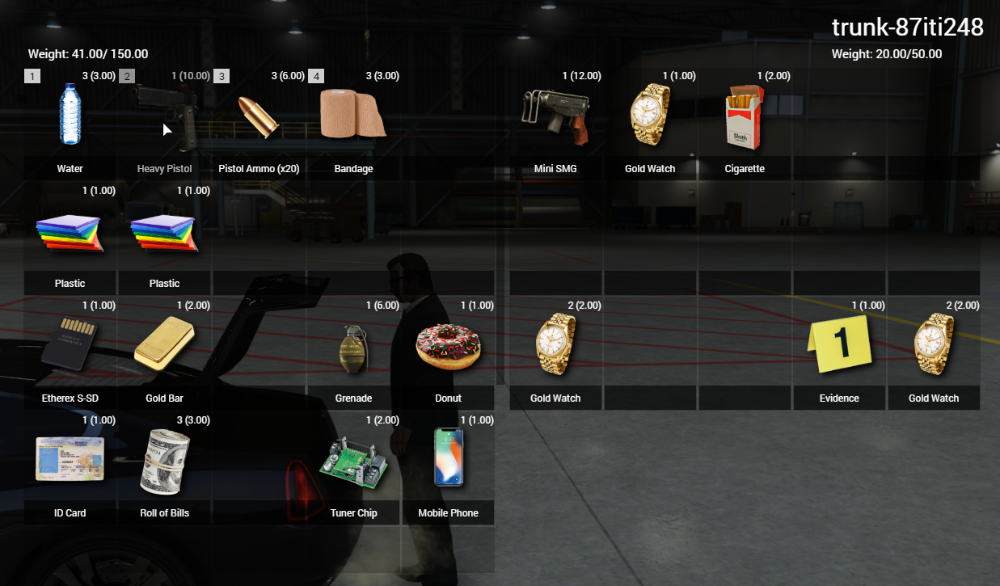

Jakub Pabian.
A perfectionist and software engineer from Southampton, England. I develop optimised, modern applications and front-end user interfaces for videogames. Sometimes I build websites.
0001 About Me
Hi there. I'm Jakub, a full-stack game developer based in Southampton, England.
My passion lives in game development. My recent work focused on FiveM, a modification for Grand Theft Auto V, enabling multiplayer games on dedicated servers. I write and optimise scripts written in Lua and C#, ran by hundreds of players on a daily basis.
These scripts often include client-facing web applications, using JavaScript, HTML, CSS and SPA web frameworks. With this, my job also involves frequent database management and server administration, amongst maintaining cybersecurity, network policies and system procedures.
Aside from this, I've also worked on projects using these technologies:
- Node.js
- Python
- Vue
- (My)SQL
- jQuery
- C#
- Lua
0010 Portfolio
An overview of my work may be seen below. I strive to create modern, responsive, intuative and optimised applications & frameworks. This includes both back-end and front-end code, which was all produced by me unless explicitly stated otherwise.
-
Inventory GUI An intuative and modernised web application, which makes API calls to a SQL database using Lua.
The front-end interface was built using the Vue.js framework, as a means of simplifying development. Draggable elements were implemented by use of jQuery functions. While providing support for interaction and movement between two inventories, this application also offers:
- item weight and quantity, with maximum capacity;
- drag & drop, or use keyboard shortcuts to move items;
- first four slots binded to 'use' the items using keyboard keys;
- responsive interface: hover, drag and click animations;
- ... and a lot more.
Security was also considered during the design process. All back-end inventory logic is performed server-side using Lua, were client updates are synchronised with the server. This ensures no reliance on the client to store data, and combats vulnerabilities such as the injected execution of server-side events.
 -
MDT System A Mobile Data Terminal used to query records on a SQL database, styled for the lore-friendly FIB in Grand Theft Auto V.
This retro-themed police interface was also built using Vue.js and jQuery. A variety of search and edit functions may be performed, queried by API calls to the database. Data is returned to the front-end with a responsive design. This system includes:
- querying and flagging warrants;
- editing, submitting, searching and deleting reports;
- managing user access;
- editing profiles, notes, flags and convictions;
- querying firearms, number plates & DNA;
- permission levels & access restrictions.
Appropriate database structures were created to ensure near-instant query times, with a focus on back-end optimization.